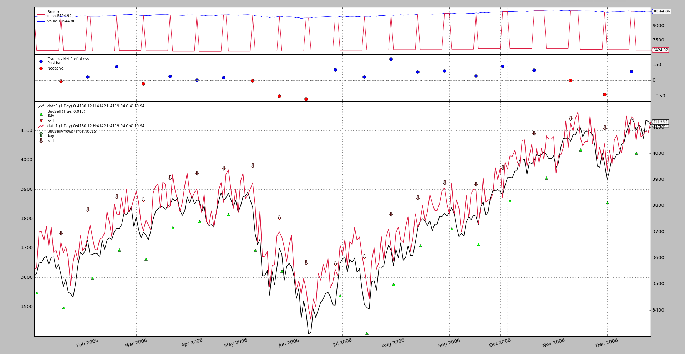
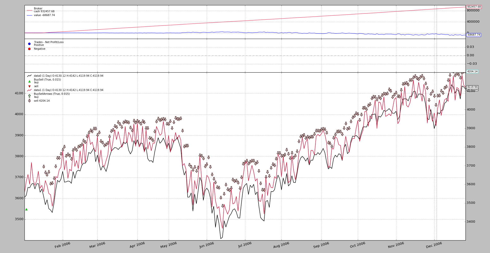

Release 1.9.32.116 adds support for an interesting use case presented in
the Community
Start a trade with a future, which includes physical delivery
Have an indicator tell you something
If needed be, close the position by operating on the spot price, effectively canceling the physical delivery, be it for receiving the goods or for having to deliver them (and hopefully making a profit)
The future expires on the same day the operation on the spot price takes place
That means:
The platform is fed with data points from two different assets
The platform has to somehow understand the assets are related and that operations on the spot price will close positions open on the future
In reality, the future is not closed, only the physical delivery is compensated
Using that compensation concept, backtrader adds a way to let the user
communicate to the platform that things on one data feed will have compensating
effects on another. The usage pattern
import backtrader as bt
cerebro = bt.Cerebro()
data0 = bt.feeds.MyFavouriteDataFeed(dataname='futurename')
cerebro.adddata(data0)
data1 = bt.feeds.MyFavouriteDataFeed(dataname='spotname')
data1.compensate(data0) # let the system know ops on data1 affect data0
cerebro.adddata(data1)
...
cerebro.run()
An example is always worth a thousand posts, so let’s put all the pieces together for it.
Use one of the standard sample feeds from the
backtradersources. This will be the futureSimulate a similar but distinct price, by reusing the same feed and adding a filter which will randomly move the price some points above/below, to create a spread. As simple as:
# The filter which changes the close price def close_changer(data, *args, **kwargs): data.close[0] += 50.0 * random.randint(-1, 1) return False # length of stream is unchangedPlotting on the same axis will mix the default included
BuyObservermarkers and therefore the standard observers will be disabled and manually readded to plot with different per-data markersPositions will be entered randomly and exited 10 days later
This doesn’t match future expiration periods, but this is just putting the functionality in place and not checking a trading calendar
Note
A simulation including execution on the spot price on the day of future expiration would require activating
cheat-on-closeto make sure the orders are executed when the future expires. This is not needed in this sample, because the expiration is being chosen at random.
Notice that the strategy
buyoperations are executed ondata0selloperations are executed ondata1class St(bt.Strategy): def __init__(self): bt.obs.BuySell(self.data0, barplot=True) # done here for BuySellArrows(self.data1, barplot=True) # different markers per data def next(self): if not self.position: if random.randint(0, 1): self.buy(data=self.data0) self.entered = len(self) else: # in the market if (len(self) - self.entered) >= 10: self.sell(data=self.data1)
The execution:
$ ./future-spot.py --no-comp
With this graphical output.
And it works:
buyoperations are signaled with a green triangle pointing upwards and the legend tells us they belong todata0as expectedselloperations are signaled with an arrow pointing downwards and the legend tells us they belong todata1as expected- Trades are being closed, even if they are being open with
data0and being closed withdata1, achieving the desired effect (which in real life is avoiding the physical delivery of the goods acquired by means of the future)
One could only imagine what would happen if the same logic is applied without the compensation taking place. Let’s do it:
$ ./future-spot.py --no-comp
And the output
It should be quite obvious that this fails miserably:
- The logic expects positions on
data0to be closed by the operations ondata1and to only open positions ondata0when not in the market- But compensation has been deactivated and the intial operation on
data0(green triangle) is never closed, so no other operation can never be initiated and short positions ondata1start accumulating.
$ ./future-spot.py --help
usage: future-spot.py [-h] [--no-comp]
Compensation example
optional arguments:
-h, --help show this help message and exit
--no-comp
from __future__ import (absolute_import, division, print_function,
unicode_literals)
import argparse
import random
import backtrader as bt
# The filter which changes the close price
def close_changer(data, *args, **kwargs):
data.close[0] += 50.0 * random.randint(-1, 1)
return False # length of stream is unchanged
# override the standard markers
class BuySellArrows(bt.observers.BuySell):
plotlines = dict(buy=dict(marker='$\u21E7$', markersize=12.0),
sell=dict(marker='$\u21E9$', markersize=12.0))
class St(bt.Strategy):
def __init__(self):
bt.obs.BuySell(self.data0, barplot=True) # done here for
BuySellArrows(self.data1, barplot=True) # different markers per data
def next(self):
if not self.position:
if random.randint(0, 1):
self.buy(data=self.data0)
self.entered = len(self)
else: # in the market
if (len(self) - self.entered) >= 10:
self.sell(data=self.data1)
def runstrat(args=None):
args = parse_args(args)
cerebro = bt.Cerebro()
dataname = '../../datas/2006-day-001.txt' # data feed
data0 = bt.feeds.BacktraderCSVData(dataname=dataname, name='data0')
cerebro.adddata(data0)
data1 = bt.feeds.BacktraderCSVData(dataname=dataname, name='data1')
data1.addfilter(close_changer)
if not args.no_comp:
data1.compensate(data0)
data1.plotinfo.plotmaster = data0
cerebro.adddata(data1)
cerebro.addstrategy(St) # sample strategy
cerebro.addobserver(bt.obs.Broker) # removed below with stdstats=False
cerebro.addobserver(bt.obs.Trades) # removed below with stdstats=False
cerebro.broker.set_coc(True)
cerebro.run(stdstats=False) # execute
cerebro.plot(volume=False) # and plot
def parse_args(pargs=None):
parser = argparse.ArgumentParser(
formatter_class=argparse.ArgumentDefaultsHelpFormatter,
description=('Compensation example'))
parser.add_argument('--no-comp', required=False, action='store_true')
return parser.parse_args(pargs)
if __name__ == '__main__':
runstrat()
{kind=link}
{kind=link}